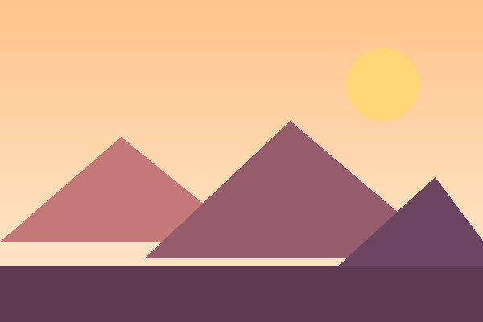
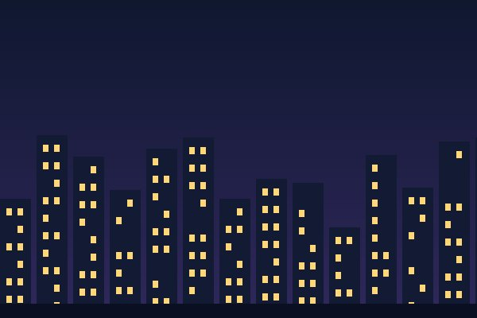
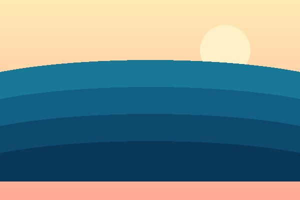
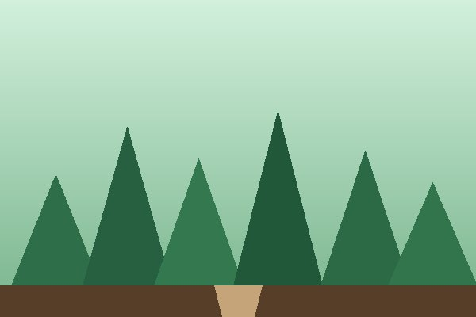
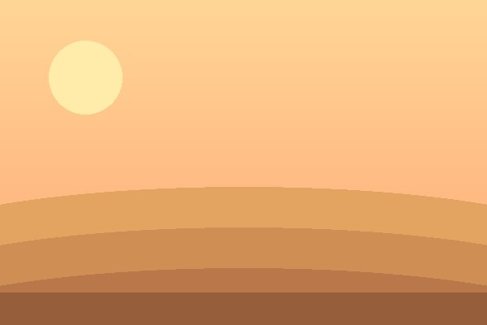

One page, five colour themes and a six-photo gallery. Pick a theme; pick a photo.
Every button re-skins the whole page — this panel and the gallery below.
Current theme: Default Theme changes: 0
Click a thumbnail to show it large. The arrow keys work too, once you write the last exercise.





Photos: 6 Views: 0 Current: Dawn Ridge